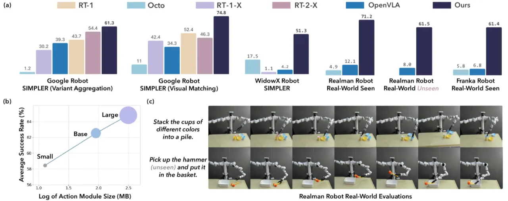
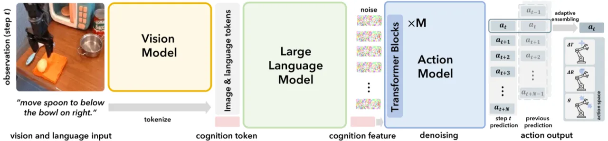
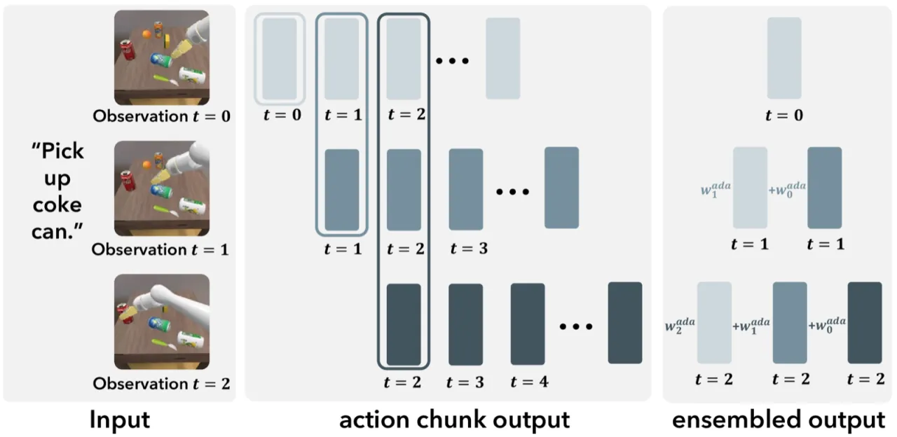
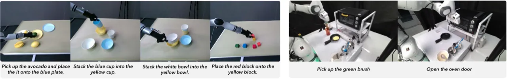
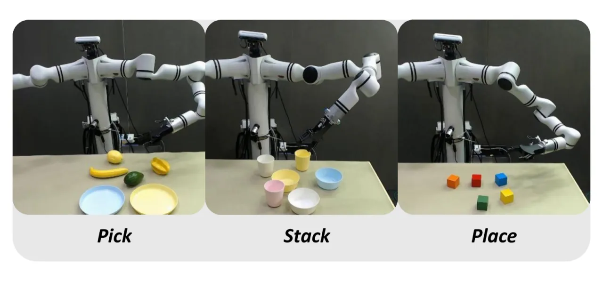

CogACT 提出一种组件化的 Vision-Language-Action (VLA) 架构，将预训练视觉语言模型的"认知"能力与专门的扩散 Transformer 动作模块解耦。在仿真和真实机器人实验中，CogACT 的成功率比 OpenVLA 高出约 35%（仿真）至 55%（真实场景），并超越参数量更大的 RT-2-X 18%。
现有 VLA 模型将视觉语言模型（VLM）直接用于动作预测，通常通过动作量化或简单回归头来输出控制指令，忽略了机器人动作预测与语言 token 生成之间的本质差异，导致泛化能力和精度受限。
"Rather than naively adapting pretrained VLMs for action prediction through simple action quantization or adding regression heads, we propose a componentized VLA architecture with specialized action modules."
现有方法存在两大问题：第一，动作空间是连续的高维多模态分布，离散化会丢失精度；第二，视觉语言模型的 next-token 预测范式并不适合时序动作序列建模。CogACT 的核心动机在于"认知"（理解场景与指令）和"行动"（输出精确控制序列）应由专门模块分别承担。

CogACT 将整体模型分为三个组件：视觉模块（Vision Module）、语言模块（Language Module）和扩散动作模块（Diffusion Action Module）。前两者复用成熟的预训练 VLM，后者为专为机器人控制设计的 Diffusion Transformer。

视觉模块采用 DINOv2 和 SigLIP 双编码器，将当前图像编码为 256 个 visual token，通过可学习的投影层输入至语言模块。语言模块基于 LLaMA-2，接收视觉 token 和自然语言任务指令，输出 cognition feature——一个压缩了场景理解和任务目标的特征向量，作为后续动作生成的条件信号。
动作模块基于 Diffusion Transformer（DiT），以 cognition feature 为条件，在扩散过程中预测 7-DoF 末端执行器动作序列（3D 平移、旋转和夹爪状态），每次预测涵盖 16 个时间步的未来动作。消融实验显示预测步长为 15 时综合性能最优（平均 62.5%），过长（31 步）反而下降至 51.2%。DiT 在等参数规模下显著优于 MLP 基线（DiT-Base 89M：62.5% vs MLP 7-Layer 89M：52.5%）。

执行时，模型维护最近 K 帧的历史动作预测。对于每个新时间步，以当前预测与历史预测的 cosine similarity 为权重，加权融合历史预测与当前输出，作为最终执行动作。这一策略有效解决了多模态动作分布下直接均值会产生非法动作的问题，同时保留了时序一致性带来的平滑性提升。

在 Open X-Embodiment 数据集的 25 个子集（共 22.5M 帧）上训练，使用 SIMPLER 仿真框架评估 Google Robot 和 WidowX，并在 Realman 和 Franka 真实机器人上进行零样本迁移测试，对比基线包括 RT-1、RT-1-X、RT-2-X、Octo 系列和 OpenVLA。
| 方法 | Pick Coke Can | Move Near | Open/Close Drawer | Open Top Drawer | 平均 (VM) |
|---|---|---|---|---|---|
| RT-2-X | 78.7 | 77.9 | 25.0 | 3.7 | 46.3 |
| OpenVLA | 18.0 | 56.3 | 63.0 | 0.0 | 34.3 |
| CogACT (Ours) | 91.3 | 85.0 | 71.8 | 50.9 | 74.8 |
| 方法 | Put Spoon on Towel | Put Carrot on Plate | Stack Green Block | Put Eggplant in Basket | 平均 (VM) |
|---|---|---|---|---|---|
| Octo-Small | 41.7 | 8.2 | 0.0 | 56.7 | 26.7 |
| OpenVLA | 4.2 | 0.0 | 0.0 | 12.5 | 4.2 |
| CogACT (Ours) | 71.7 | 50.8 | 15.0 | 67.5 | 51.3 |
| 方法 | Pick（均值） | Stack（均值） | Place（均值） | 整体平均 |
|---|---|---|---|---|
| Octo-Base | 8.3 | 0.0 | 12.5 | 4.9 |
| OpenVLA | 8.3 | 15.6 | 12.5 | 12.1 |
| CogACT (Ours) | 70.8 | 82.3 | 60.4 | 71.2 |
| 方法 | Unseen Colors | Unseen Shapes | Unseen Categories | 平均 |
|---|---|---|---|---|
| OpenVLA | 0.0 | 6.3 | 12.5 | 6.3 |
| CogACT (Ours) | 87.5 | 81.3 | 25.0 | 64.6 |
| 方法 | Close Oven | Open Oven | Pick Bowl | Pick Brush | 平均 |
|---|---|---|---|---|---|
| OpenVLA | 18.2 | 0.0 | 9.1 | 0.0 | 6.8 |
| CogACT (Ours) | 63.6 | 72.7 | 72.7 | 36.4 | 61.4 |

动作架构对比中，DiT-Small（13M）的平均成功率（58.5%）已超越 MLP 7-Layer（89M，52.5%），体现出 DiT 在动作序列建模上的参数效率优势。多步预测步长消融实验中，预测 15 步（62.5%）优于单步（42.8%）和 3 步（55.5%），说明适当的时序窗口对提升动作连续性至关重要。动作融合策略对比：Adaptive Ensemble（62.5%）> Temporal Ensemble（58.9%）> Action Chunking（50.7%）。
当前模型专注于"7 degrees of freedom (DoF) in this work"的夹爪控制，不支持双臂、全身控制等更复杂的机器人形态。训练数据也限定为"single-arm end-effector control and at least one third-person camera perspective"的数据集。
作者明确排除了 Language Table 和 Droid 数据集，原因是"their significant distribution disparities with other data"。这意味着模型在类似这些数据集的任务分布上可能表现欠佳。
在 Realman 机器人的未见属性泛化测试中，Unseen Categories 成功率仅 25.0%，远低于 Unseen Colors（87.5%）和 Unseen Shapes（81.3%），说明模型对完全新颖的物体类别泛化能力有待提升。
各真实机器人平台需要收集 48–400 条任务演示数据进行微调，限制了零样本泛化到全新任务的能力。这是当前数据驱动 VLA 方法的共性瓶颈，并非 CogACT 独有。